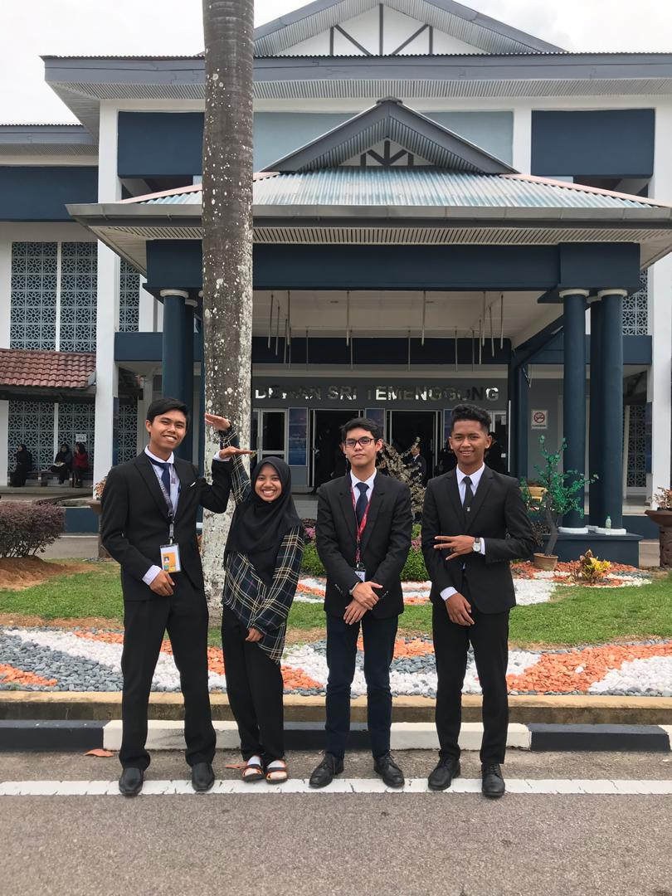
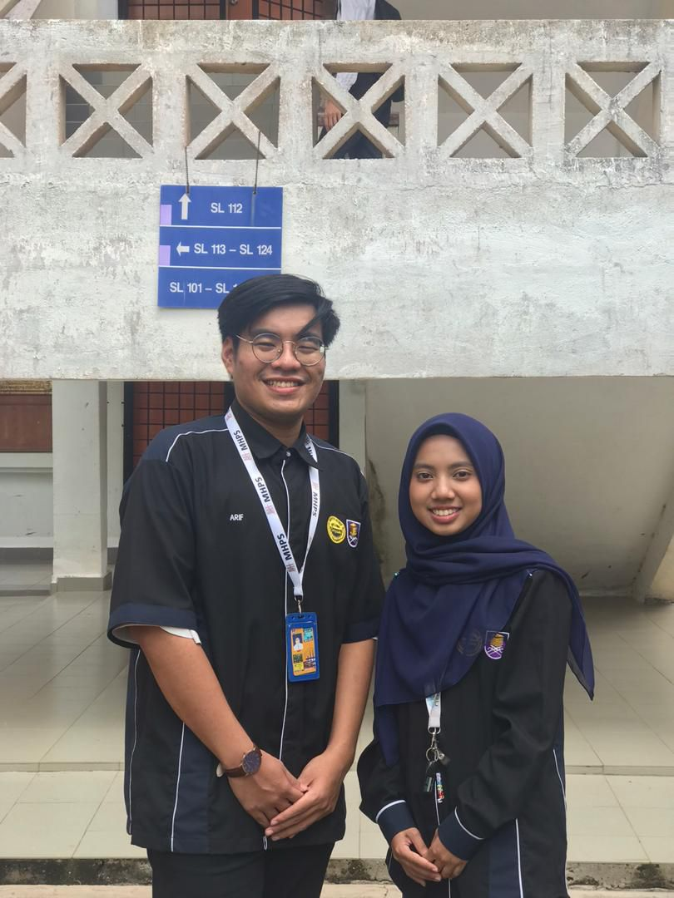
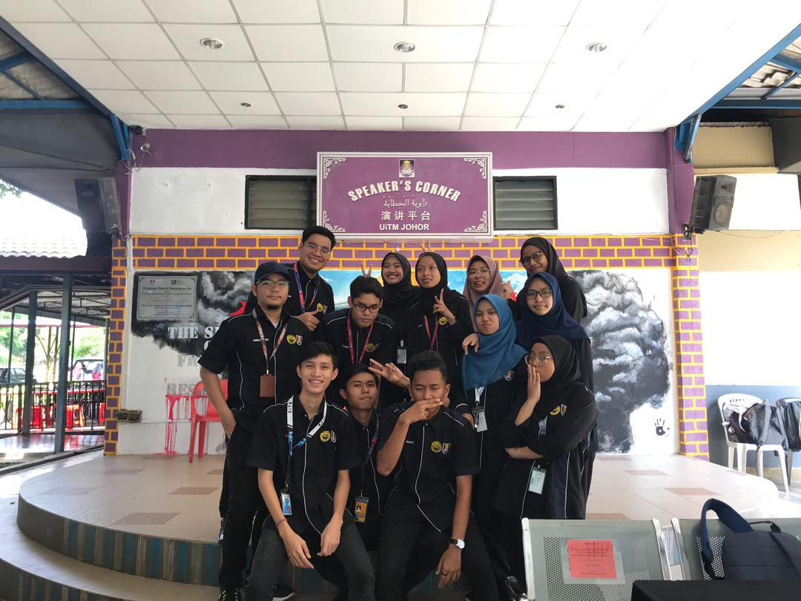

COMPASS

I've been determined to join COMPASS ever since my first Annual General Meeting on first semester. But to no avail, the recruitment process is kinda what makes me retreat myself. I don't have the courage to volunteer my name and walk up the stage infront of the whole DCS students. So, on March 2019 (second semester) when COMPASS brought up their New Recruitment Interview poster, I grab the opportunity that I had missed before. I was interviewed for Multimedia's excos and Academic excos. I actually want that Multimedia position because I kind of like it? But yeah to my suprise, I was accepted and oh the position I got is Academic Excos due to urm my last semester result which passed the minimum requirement for that position [3.50]. I'm very glad that I took a step forward to join the recruitment as it opens many doors for me ever since.

Being in the club offered me a lot of skills. I was stranded in my room all the time reading and become a study-freak during my first semester so it gets bored. But, by joining COMPASS
my life have been fun and enjoyable ever since. Not to mention I learnt a lot during my stay, up until now. Everyday is a brand new story and knowledge. In COMPASS, there's no
discrimination between seniors and juniors, it gives a homie environment that I never experienced before. I was also dragged by President (Khairunuqman) to Majlis Dewan Mahasiswa abandoning
my plan to enjoy myself at Book Festival @ PWTC. From there, I managed to see how would a parliament look like, and how did the UiTM organization helps to discuss about
student welfare.
In COMPASS you would feel like you're having a second family that treats you well and never abandon you. It's a dream family to everyone longing for one. They never let you work or struggle alone. They would help you in much possible even if they themselves are busy with their studies. Studies have never been difficult with them as they would always tutor me and allowed me to bring any exercise to the meeting. It's a good thing to avoid wasting your time. On top of that, in completing your paperwork, they would guide you and everyone would work together making one event successful. Of course that would ease your work more and the burden wouldn't be too much to handle by yourself. If you ever make mistakes, they won't just suddenly scold you nonetheless they will check thoroughly as to why the mistakes happened and how to resolve it. Well, it's more fun to success together than success alone.

I did mentioned that I was accepted in Academic Excos position. Well, being one of Academic Excos alongside with Arif is not an easy task especially during study week until the last paper.
Students would swarmed me with bunch of questions and I will have to properly manage my time to study and answer them as well. Not to mention, sometimes the questions were asked when I'm just about to
sleep. But then again, it was my responsibilities. Besides, I do enjoy teaching others either via online or face to face at Library because from there, my knowledge would be strengthen and
sometimes I would gain a new knowledge and solution based on their questions. Patience is a must when you're holding this position. You have to be considerate also as not all students are
fast learner. Some of them walk on a slow pace and you have to be patience and use difference approach to make them understand. When they're excel. that's the most happiest moment in my life
as I can give benefits to others.
Ouh, my position was replaced by Afrina last year and I was appointed as the Secretary which I DON'T HAVE KNOWLDEGE about that position at all. I was reluctant and not confident if I can take this position
well but I won't give up. I would keep asking the previous Secretary to guide me through everything from A to Z. Hope I didn't annoyed her with my questions. There were times where I want to cry and
quit myself from this position, but the support I get from other COMPASS excos are too overwhelming that I often halt my decision to quit. I learnt new things everyday from managing documentation
to filing a report. I have to manage my time precisely as being a Secretary would make you rush from the deadline between your club and the UiTM organization. I have to maintain a good bidirectional image
between two organization. Everything won't go as I scheduled if the other teams did not support and give full cooperation, therefore I am so thankful to them for making my work
easier.
Some appreciation to include, a whole gratitude and thank you to all my friends and lecturers in guiding me during my journey. Thank you for always being there and help me whenever needed. I never regret my decision I made last year in becoming a part of COMPASS excos. As this is my last year, I hope that I can pass something meaningful to my junior and new recruitments to guide you all through your journey. I also hope that the bond created between us would stay and be passed through each and every generation just like our objective MAKE COMPASS GREAT AGAIN.
One can't be successful without others supporting them.
TOGETHER EVERYONE ACHIEVES MORE
Oh here's a clip of our greatest Pre-Graduation Night FSKM. We nailed the stage!